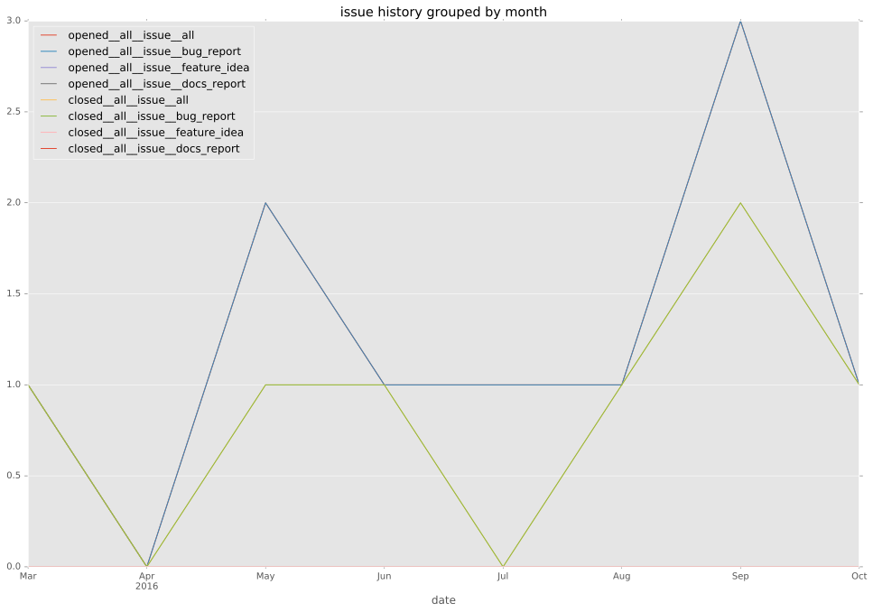
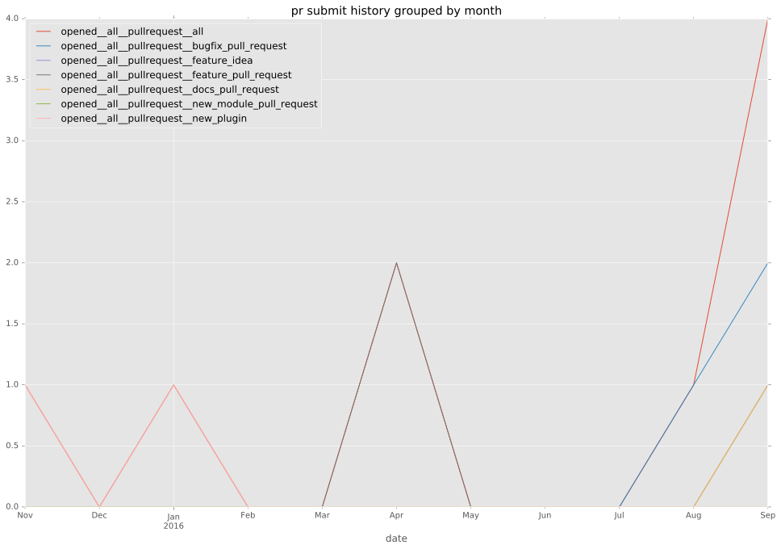
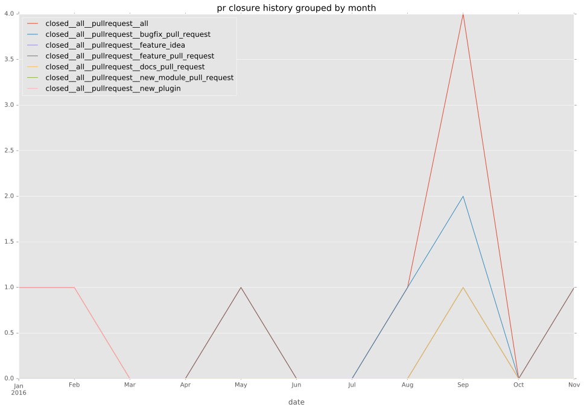

total issue counts
feature pull request: 2
pullrequest: 9
docs pull request: 1
bugfix pull request: 4
issue: 11
new plugin: 2
bug report: 11
issue history

pullrequest history


days open by issue type
bugfix pull request
count: 8
std: 0.886405260428
min: 0
max: 2
median: 0.5
mean: 0.75
all
count: 25
std: 12.042701801
min: 0
max: 41
median: 2.0
mean: 7.12
pullrequest
count: 0
std: nan
min: nan
max: nan
median: nan
mean: nan
docs pull request
count: 2
std: 0.0
min: 3
max: 3
median: 3.0
mean: 3.0
feature pull request
count: 4
std: 19.6299091524
min: 0
max: 34
median: 17.0
mean: 17.0
issue
count: 0
std: nan
min: nan
max: nan
median: nan
mean: nan
new plugin
count: 3
std: 15.5884572681
min: 14
max: 41
median: 14.0
mean: 23.0
bug report
count: 8
std: 5.73055719056
min: 0
max: 17
median: 1.5
mean: 3.625
closures grouped by total days open